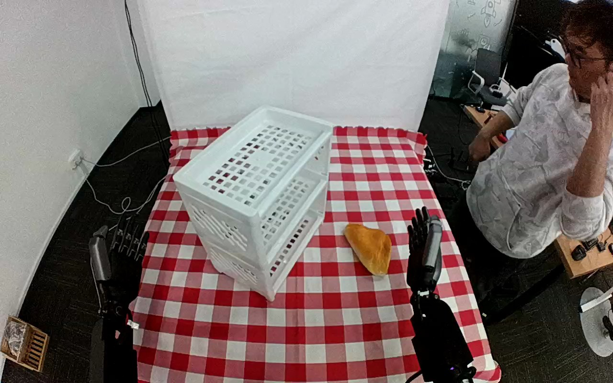

ActionNet · 01JHF8YGPVVKAXY7FK
01jhf8ygpvvkaxy7fk

Visual review action_review.json
{
"dataset": "ActionNet",
"episode_id": "01JHF8YGPVVKAXY7FK",
"prompt_protocol": "humanoid_action_v1",
"prompt_provenance": "visually_authored_from_video_and_initial_frame",
"review_scope": "One dedicated agent reviewed the complete unchanged 421-frame top/rgb.mp4 and the generation first frame. Full single-task sequence retained.",
"source_video": "../../original/top/rgb.mp4",
"conditioning_first_frame": "../first_frame.png",
"generation_video": "../video.mp4",
"action_prompt": "../actiongeneration_prompt.txt",
"source_frame_start": 0,
"source_frame_end_exclusive": 421,
"fps_rational": "30/1",
"resolution": [
1280,
800
],
"source_annotation": {
"verbatim_task_prompt": "Take the croissant and put it on the second shelf",
"task_prompt_path": "../../original/task_prompt.txt"
},
"anatomical_side_evidence": {
"active_arm": "hand entering from the lower-right edge of the initial image",
"initial_frame_evidence": "Paired forearms enter from the near lower image edges; the lower-right forearm/hand is the one that reaches the pastry. Torso and shoulders are outside the image, so attachment to the robot body is not visible. Hand geometry (thumb and grouped fingers) does not independently establish camera mirroring or pose relative to the robot body.",
"confidence": "Visible-arm identity is unambiguous; anatomical left/right is not independently established."
},
"arm_roles": {
"lower_right_visible_arm": "Sole manipulating hand: closes thumb and fingers around the pastry on the tablecloth, bears it during lift and transport, inserts it into the middle compartment of the white rack, opens to release it, withdraws and is raised, then lowered back to its lower-right starting position.",
"lower_left_visible_arm": "Remains stationary at the lower-left edge for the whole clip; no contact with the pastry, shelf or any other object."
},
"coordination": "Single-hand object placement. No hand-to-hand transfer, bimanual stabilization or regrasp. A person at the right edge of the frame stands, then walks out of view near the end; no physical interaction with the robot, pastry or shelf is observed.",
"chronology": [
{
"frames": [
0,
22
],
"observation": "Pastry rests on the checkered cloth right of the three-tier white rack; both hands are clear and static (the lower-right hand is upright beside the pastry). Person at right edge is seated/standing with a hand at the face."
},
{
"frames": [
24,
48
],
"observation": "Lower-right hand tilts and moves left toward the pastry with fingers open; thumb-side and finger-side surfaces come either side of it by about frame 48."
},
{
"frames": [
50,
100
],
"observation": "Hand lowers onto the pastry and its open thumb/fingers straddle the pastry's lower-right end; native frame 102 shows the open hand against the pastry with the pastry still on the cloth."
},
{
"frames": [
102,
166
],
"observation": "Fingers and thumb close on opposing sides of the pastry (native frame 150 shows dark thumb below and fingers above the orange pastry); small shifts of the grasp before lift. No second-hand contact."
},
{
"frames": [
168,
214
],
"observation": "Hand lifts the pastry off the cloth and carries it left and upward toward the rack while rotating it, pastry held end-on in the hand."
},
{
"frames": [
216,
262
],
"observation": "Held pastry reaches the rack front face and moves into the middle (second) compartment opening; native frame 260 shows the pastry partly inside the compartment behind the hand."
},
{
"frames": [
264,
336
],
"observation": "Hand pushes the pastry further into the middle compartment and holds it there. The rack appears slightly shifted/tilted in the image in frames about 296-332 (native 316), apparently pushed slightly by the hand, and returns to roughly its original pose by about frame 336. Pastry becomes mostly occluded by the hand and the shelf mesh."
},
{
"frames": [
338,
358
],
"observation": "Fingers open (native frame 340: open thumb/finger spread beside the pastry) and the hand retracts from the compartment; pastry stays inside the middle compartment."
},
{
"frames": [
360,
384
],
"observation": "Hand, now clear of the pastry, moves right and upward away from the rack with fingers spread. The person moves out of the view to the right."
},
{
"frames": [
386,
420
],
"observation": "Hand lowers back to the lower-right edge of the image and stays still. Pastry remains resting inside the middle compartment (native frame 420) with both hands clear; no further manipulation."
}
],
"observed_outcome": {
"status": "successful_visible_placement",
"description": "Pastry is released into the middle (second from top) compartment of the white three-tier rack and remains resting there while the hand withdraws.",
"selected_action_outcome": "successful_visible_placement",
"source_overall_success_label": "not used to infer outcome"
},
"source_annotation_discrepancies": [
"Source says 'second shelf'; the pastry ends in the middle compartment of a three-tier rack, which is second from the top and second from the bottom, so it is consistent. The prompt names the middle shelf because the numbering direction is not stated.",
"Croissant identity comes from the source annotation; visually it is a golden-orange pastry-shaped object (triangular, textured). Prompt uses croissant-shaped pastry rather than asserting food material."
],
"uncertainties": [
"Anatomical left/right is not established: torso and shoulders are outside the image and camera mirroring is not known; the prompt uses the unambiguous hand entering from the lower-right edge.",
"Exact frame of table separation and of release inside the shelf cannot be isolated because the hand and shelf mesh occlude the pastry; chronology intervals bracket visible transitions.",
"The slight rack displacement around frames 296-332 may be hand contact with the rack or camera/rack motion; not narrated in the prompt.",
"Actual food versus prop material cannot be established visually.",
"Top camera shows slight motion across the sequence; the fixed-camera generation constraint is retained verbatim."
],
"inspection_coverage": {
"total_decoded_frames": 421,
"overview_frame_indices": {
"start": 0,
"stop_inclusive": 420,
"step": 2,
"count": 211
},
"overview_method": "Decoded RGB every second frame into eighteen temporary 4-by-3 contact sheets (480 px tiles) outside dataset folders; reviewed all sheets.",
"native_resolution_frames": [
0,
102,
150,
200,
260,
316,
340,
420
],
"native_resolution": [
1280,
800
],
"initial_png_inspected_after_full_sequence": true,
"temporary_evidence_location": "/tmp/an_review_01JHF8YGPVVKAXY7FK (removed after review; not under generation input)",
"retained_evidence_frame_directories": false
},
"preservation": {
"whole_original_single_task_clip_retained": true,
"crop": false,
"shorten": false,
"resize": false,
"reencode": false,
"source_and_generation_sha256_equal": true
},
"prompt_word_count": 78
}